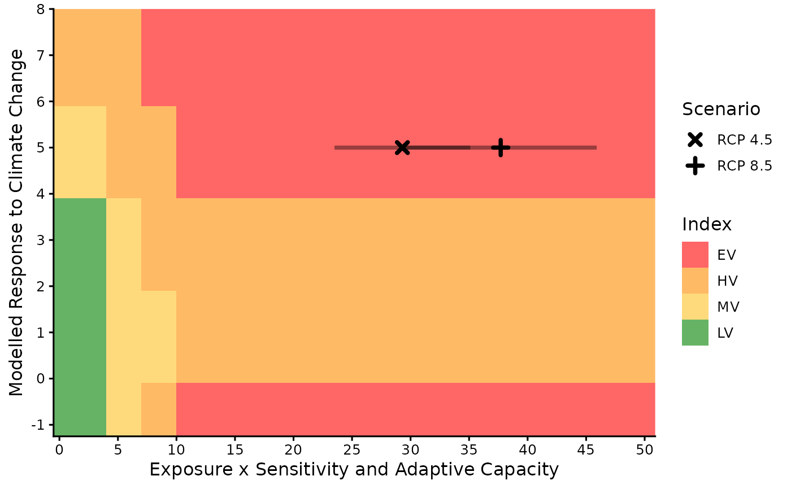

A graph to visualize where the result falls relative to the thresholds used to calculate index values and how the combination of the D score and B/C score affects the overall index value.
Details
The colours show the location of the thresholds used to determine the index, the points show the score for each scenario and the lines show the range of scores produced by the Monte Carlo simulations. Multiple scenarios are identified by different symbols
Examples
base_pth <- system.file("extdata", package = "ccviR")
# scenario names
scn_nms <- c("RCP 4.5", "RCP 8.5")
clim_vars <- get_clim_vars(file.path(base_pth, "clim_files/processed"),
scenario_names = scn_nms)
spat_res <- analyze_spatial(
range_poly = sf::read_sf(file.path(base_pth, "rng_poly.shp"), agr = "constant"),
scale_poly = sf::read_sf(file.path(base_pth, "assess_poly.shp"), agr = "constant"),
clim_vars_lst = clim_vars,
hs_rast = terra::rast(c(file.path(base_pth, "rng_chg_45.tif"),
file.path(base_pth, "rng_chg_85.tif"))),
hs_rcl = matrix(c(-1, 0, 1, 1, 2, 3), ncol = 2),
scenario_names = scn_nms
)
#> Checking files
#> Preparing polygon 'Climate Data Extext'
#> Preparing polygon 'Assessment Area'
#> Preparing polygon 'Range'
#> Clipping 'Range' to 'Climate Data Extent'
#> Clipping 'Range' to 'Assessment Area'
#> Assessing local climate exposure
#> Assessing thermal & hydrological niches
#> Assessing modelled range response to climate change
#> Warning: More than 10% of the range change raster does not match the expected values.
#> Is the classification table correct?
#> Finalizing outputs
# vulnerability factor table with score 1 (somewhat increase vulnerability)
# for all factors
vuln <- make_vuln_df("test_species", val1 = 1, mig = 1)
vuln$Value2[c(5, 7, 9)] <- 3
index_vuln <- calc_vulnerability(spat_res$spat_table, vuln, "Bird")
#> calculating vulnerability index RCP 4.5
#> performing monte carlo
#> finished vulnerability
#> calculating vulnerability index RCP 8.5
#> performing monte carlo
#> finished vulnerability
plot_score_index(index_vuln)
